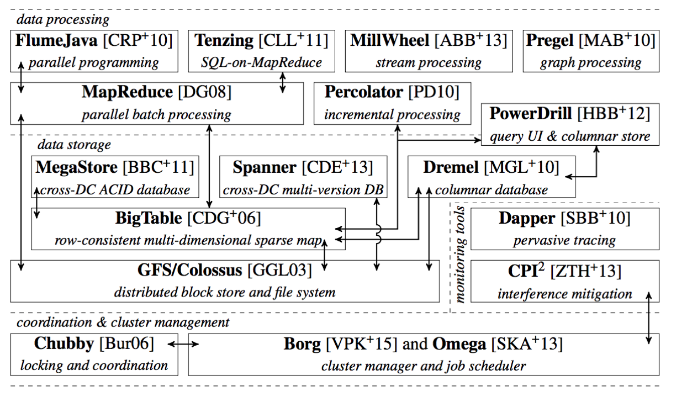

容器的本质
容器实际上是一个Linux Namespace、Linux Cgroups和rootfs三种技术构造出来的进程的隔离环境。
- 容器的静态试图：一组联合挂载在/var/lib/docker/...上的rootfs，即“容器镜像”Container Image。
- 容器的动态试图：一个由Namespace和Cgroup构成的隔离环境，即“容器运行时”Container Runtime。
作为一个开发者，不关心运行时，容器镜像才是真正承载容器信息进程传递的。容器编排由此出现，容器走向容器云。
Kubernetes的本质
kubernetes 架构
Kubernetes项目的理论基础要比工程实践走得靠前很多，归功于Google2015年4越发布的Borg论文。
Borg承载了Google公司整个基础设施的核心依赖，在整个基础设施技术栈的最底层。

图片来源：http://malteschwarzkopf.de/research/assets/google-stack.pdf

Kubernetes跟Borg非常相似，由Master+Node组成。
Master控制节点：
- kube-apiserver 负责API服务
- kube-scheduler 负责调度
- kube-controller-manager 负责容器编排
整个集群数据持久化由kube-apiserver处理后保存在Etcd中。
Node计算节点最核心组件kubelet，负责同容器运行时（比如docker项目）打交道。
- CRI （Container Runtime Interface）定义了容器运行时各种核心操作，比如启动一个容器需要的所有参数等。只要符合这个容器运行时能够运行标准的容器镜像，都可以通过CRI接入到Kubernetes项目。
- OCI 容器运行时规范同底层的Linux操作系统进行交互，把CRI 请求翻译成Linux 操作系统的调用（操作Namespace和Cgroups等）
- CNI （Container Networking Interface） 网络插件。
- CSI （Container Storage Interface） 存储插件。
- Kubelet通过gRPC协议同一个Device Plugin的插件进行交互，这个插件时Kubernetes项目用来管理GPU等宿主机物理设备的主要组件，也是基于Kubernetes项目进行机器学习等工作关注的功能。
Kubernetes 概念
Docker Swarm + Compose项目是通过“link”，来解决多个容器的关联关系的。 Docker会在不同容器内以环境变量注入的方式传递IP，端口信息来实现多个容器的关联。
Kubernetes是用“Pod”来共享Network Namespace、同一组数据卷，从而达到高效交互信息的目的。通过“Service”的服务来给应用提供访问入口。
Pod 绑定 Service服务，Service服务声明IP地址等信息，作为Pod的代理入口Portal，替代Pod对外暴露一个固定的网络地址。

Kubernetes围绕Pod不断扩展：
- Deployment Pod的多实例管理器。
- Secret Credential信息以Secret的方式存入Etcd，启动Pod时挂载进容器。
- Job 只运行一次性的Pod。
- DaemonSet 每个宿主机只能运行一个副本的守护进程服务。
- CronJob 定时任务。
Kubernetes项目中，推崇使用“声明式API”的方式：
- 通过一个编排对象，比如Pod，Job等来描述管理的应用。
- 通过服务对象，比如Service，Secret等负责具体平台级功能。
编排对象和服务对象都是API对象。